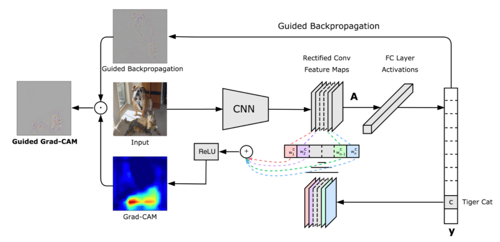
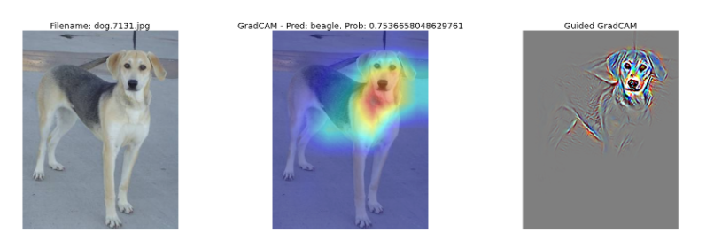
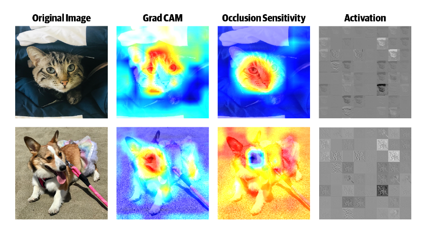

CNN Explainers
Contents
CNN Explainers¶
Visualising the CNN internals and what they pay attention to¶
Given the ‘black box’ nature of CNNs, we need to be familiar with the tooling needed to visualize their internal representations.
Grad-CAM¶
One of the most popular visualization methods is the Gradient weighted Class Activation Mapping (Grad-CAM) that uses the class-specific gradient information flowing into the final convolutional layer of a CNN to produce a coarse localization map of the important regions in the image.
 GradCAM block diagram
 Results of GradCAM for ResNet50 training on ImageNet
Occlusion Sensitivity¶
In most instances we need to have an evaluation of robustness of a CNN to occlusions. This is quite important for video surveillance systems. To achieve that, we mask a part of the image (using a small square patch placed randomly) and observe if the prediction is still correct, on average, the network is robust. The area in the image that is the warmest (i.e., red) has the most effect on the prediction when occluded as shown below.
 Occlusion Sensitivity
Grad-CAM Demonstration¶
The Grad-CAM has been implemented in tf-explain APIs and is readily available to use. Se also other writeups that demonstrate its usage in helping us design better / more robust CNNs.
NOTE: Click here to view if the notebook below is not visible in Github pages.